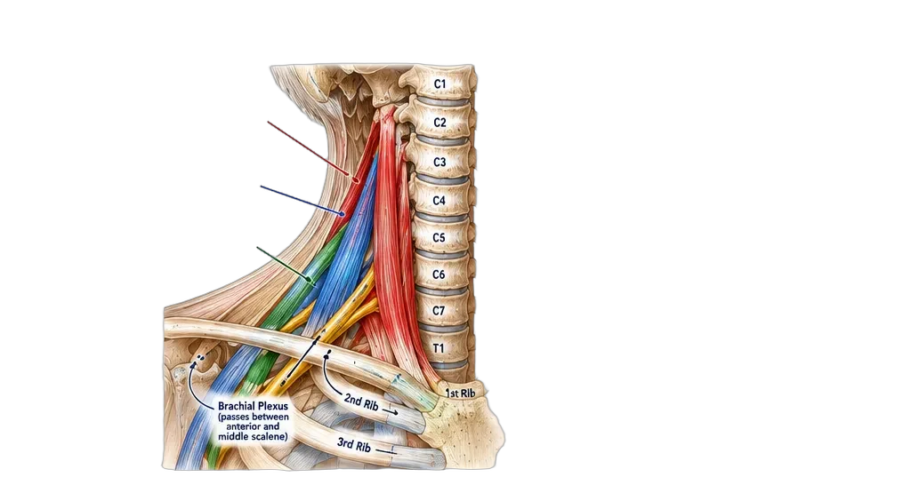
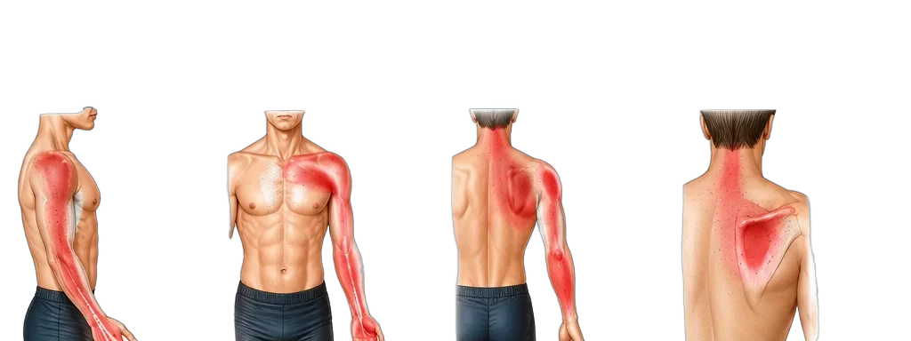

The Scalenes & Intercostals
Anatomy · Attachments · Pain Patterns · Clinical Insights
Breathe Easy. Move Free.
Anatomy · Attachments · Pain Patterns · Clinical Insights
Breathe Easy. Move Free.
The scalenes (anterior, middle, posterior) attach from the cervical spine to the first and second ribs. They assist with neck flexion, lateral flexion, and rib elevation during breathing. When tight or overloaded, they can compress the brachial plexus and subclavian vessels (thoracic outlet), causing pain from the neck to the hand.


| Muscle | Origin | Insertion | Function |
|---|---|---|---|
| Anterior Scalene | C3–C6 transverse processes | First rib (scalene tubercle) | Neck flexion, lateral flexion |
| Middle Scalene | C2–C7 transverse processes | First rib (posterior) | Lateral flexion |
| Posterior Scalene | C5–C7 transverse processes | Second rib | Lateral flexion |
| Intercostals | Inferior border of rib | Superior border of rib below | Breathing mechanics |
| Muscle | Primary Pain Location | Arm Radiation | Key Movement Pain |
|---|---|---|---|
| Anterior Scalene | Chest, front of shoulder | Arm → thumb/index/middle | Neck rotation, deep breathing |
| Middle Scalene | Upper back (interscapular) | Back of arm | Lateral flexion |
| Posterior Scalene | Side of neck | Lateral arm | Lateral flexion, rotation |
| Intercostals | Chest wall, ribs | Wraps around torso | Deep breathing, twisting |